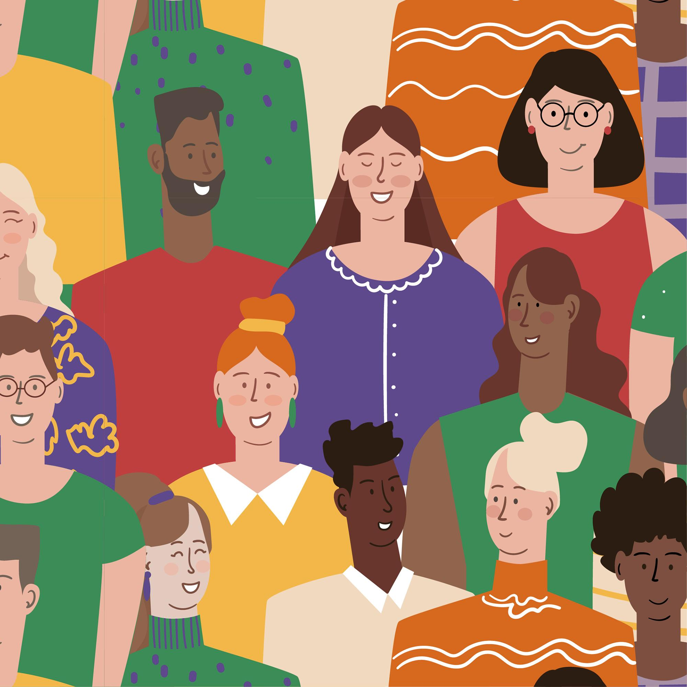

Début de l'aventure
Notre équipe s'est rencontrée lors de la semaine Future of Europe organisée à Strasbourg...

FOE at European Parlement

Our team :)
Témoignages et rencontres
Ici espace disponible pour des témoignages de jeunes que nous avons rencontrés...
Flora, Buzançais, France
Click on the card to show the content
1) Yes, It's the right.
2) She used to have one but nowadays she votes for the less bad.
3) She lacks information about what are the local policies. So It's a no.
4) She fears It would take too much time to get involved. Also, the local initiatives are only destinated at old people or families in the area, If there was more young initiated or related initiatives she would be more interested
5) An event that get people together and make them mix otherwise everyone stays in it’s group, for example speed dating for friends or table of people in front of each other that have some time to speak before changing their seat.
Emma, Paris, France
Click on the card to show the content
1) Yes, It's "Les républicains" on the right spectrum.
2) She votes for the less bad.
3) She lives in different areas for her work and studies, she knows what's going on where she works but doesn't feel like a local resident there so don't really feel involved.
4) She doesn't know the local politics from her hometown and she doesn't feel like she belong to the place she lives for her studies. Also, she feels busy and doesn't really know what she could do or how to find the time for that.
5) A local district meeting would be nice, she never heard of one happening in her area in Paris but would have loved to meet the other residents and get to know about the things that happens there. She feels like this would help to mix with other people as well as getting involved into the decisions.
Sara, Setúbal, Portugal
Click on the card to show the content
1) Yes, it's PS (Socialist Party) a political party from center-left. I know it, in a general from throughout the news and electoral results.
2) Usually I vote for the "less bad" option because I don´t feel fully represented by any other political party and none of them represet my values.
3) Althought I participated in the election in Portugal, as an assistant and I collected signatures for the creation of a new party in Portugal, the thruth is that, in my local community I don't feel represented nor involved in political decisions.
4) The feeling that my opinion doesn't matter; Lack of time to actually follow political matters and decisions; Lack of in politicials
5) I suggest more educational sessions regarding politics to youth people and more initiatives for youth participation, as open assembleis and participatory budgets - althought they exist, they are not well publicized.
Helena, Hamburg, Germany
Click on the card to show the content
1) I would guess that the most popular group in Hamburg would be SPD (social democrats, centre-left).
2) There is no political group I feel completely represented by. So, I would say yes, I usually vote for the "least bad" option.
3) No, I don't feel involved in political decisions.
4) I feel my lack of political knowledge but also the fact that I can't change anything prevent me from getting more involved.
5) Sometimes, politicians use language that no one understands or that is deliberately vague or confusing. They should use simple language to address young people and be more inclusive.
Maria, Hamburg, Germany
Click on the card to show the content
1) Yes, the left party.
2) Yes, the left party represents my values well.
3) Not really, because I never know what decisions need to be made so I don’t know how to involve myself.
4) Lack of knowledge, lack of transparency in political activity, feeling like nothing’s going to change because the things that are important to me are mostly not what is on the agenda of the ruling political parties. Those mostly focus on economic growth, which is obvious in a capitalistic society, yet in my opinion we should be focusing more on humanitarian and ecological issues.
5) Maybe just as a government working on making politics more transparent and teaching kids from a young age that they have a voice that is important. Teach kids from a young age that they have something to say and show them how to get involved. I feel like especially young people should always be encouraged to become politically active. Even teaching about volunteering or political involvement in schools could be a start.
Trystan, Creil, France
Click on the card to show the content
1) My city is politically anchored on the left (it’s the oldest city in France governed by socialists, for more than a century).
2) Yes, there is a political group that represents my values. But sometimes we may not share all the positions of the same party equally.
3) I feel involved (working in a territorial collectivity and participating in the implementation of local policies). I think it’s simpler to be involved at the local level, because it’s more concrete, it’s a scale closer to the inhabitants with more opportunities to get involved. But it’s necessary that the territorial collectivities invest more in a true participatory democracy on the other hand, by associating the inhabitants more actively from the beginning of a project or a public policy, to define it together.
4) For what prevents being more involved: The time it takes (when you’re in active life or a student) and a sense of illegitimacy in the face of people who have been present for a long time in citizen councils.
5) Having an informal event bringing together young people from different backgrounds, with different life paths, who can exchange among themselves around activities, and build a point of view on the directions they would like to give to their territory.
Franco, Montreal, Quebec
Gonçalo, Lisbon, Portugal
Click on the card to show the content
1) Yes, it's the center-left party
2) I don't identify with any of them completly. Because in some I feel represented by the social causes that they defend and then in other i like their economic point of view better but not at the same time. So, I normaly vote in the one who's more similar to my way of thinking.
3) No
4) Lack of time; Lack of knowledge on how the youth side of political parties work; The feeling that I can't change much
5) We could have more initiatives in schools and universities to learn about politics, how is our country political spectrum, how do elections work and parties should get to know themselves.
Données et statistiques
La démographie et les comportements électoraux en France montrent des écarts importants entre générations, tant du côté des électeurs que des élus. Ces données illustrent le poids plus faible des jeunes dans les décisions politiques et leur sentiment croissant de défiance envers le système démocratique.
Solutions innovantes
Ici espace disponible pour présenter des exemples concrets de solutions innovantes...
Étude de cas 1
Ici sera présentée une solution innovante avec illustrations
Étude de cas 1

Ici sera présentée une solution innovante avec illustrations
Further exploration
Here are some examples of authors or other sources on topics related to our article.
Salome Saqué
Click on the card to show the content
French journalist who worked and wrote a book on the struggles of youth participation and why It matters to act about It.
Her book.Study on youth participation in Portugal
Click on the card to show the content
This Portuguese report says that while young people in Portugal are less engaged in traditional forms of political participation like voting or joining political parties, they are increasingly active in non-conventional and online forms of engagement, such as signing petitions, joining activist collectives, and participating in social media debates. The report highlights that youth often feel disconnected from formal political institutions but remain committed to democratic values, showing strong interest in issues like climate change, gender equality, and social justice. Education and income levels play a key role in political participation, and although youth are sometimes perceived as politically passive, the study reveals a dynamic and evolving landscape of civic engagement shaped by digital tools and new social movements.
Here is the report in portuguese.Study upon stereotypes on youth
Click on the card to show the content
This study was made in 2019 and looks at the stereotypes that we find repetedly, from antiquity Socrate saying that youth nowadays is not what It used to be, to our current generation saying the same thing about youth.
The study "Kids these days: Why the youth of today seem lacking".Amnesty international campaign
Click on the card to show the content
The famous ONG Amnesty international made a campaign to fight against stereotypes on youth
The campaign.Report on young votes in Germany
Click on the card to show the content
This German report describes the political attitudes and voting behaviour of young people in Germany using data from three major studies (FES study, Shell Youth Study 2024, SINUS Youth Study 2024). It puts an emphasis on the difference between East and Western Germany (lower democracy satisfaction in the east compared to the West), gender gaps in voting behaviour (rising support for right-wing populist AfD, especially among young men and in East Germany). Some of the findings: Many feel powerless: 59% believe politics affects their lives, but only 45% think they can influence it. Youth political engagement is often short-term and issue-specific, while long-term participation remains low. Trust is higher in autonomous state institutions (e.g., Constitutional Court, police) than in political parties. 44% agree that a “strong hand” is needed to restore order (sign of growing authoritarian leanings). This analysis highlights the need for a multidimensional approach to civic education and political communication that considers the diverse life realities, regional differences, and gender-specific characteristics of young people to foster sustainable democratic participation.
The report.German article on the voice of the youth in rural area with the example of an EU project
Click on the card to show the content
German article from the university of Leipzig. It’s about the under-represented and under-researched voices of youth in rural areas and the democratic education effect but also the challenges of youth participation. They give an example of an EU-funded project ‘’The Best Is Yet to Come’’ in which youth from rural areas from different countries met to discuss about rural challenges and solutions across national lines. The project resulted in the 2nd European Rural Youth Parliament (2019 in Candás, Spain) with a declaration presented to European institutions, trying to ensure that rural youth voices were heard in EU policymaking
The article.